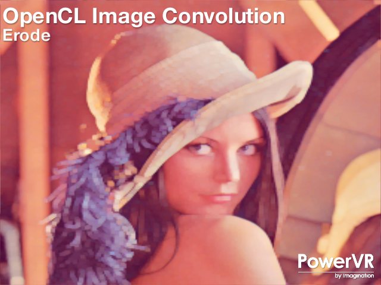
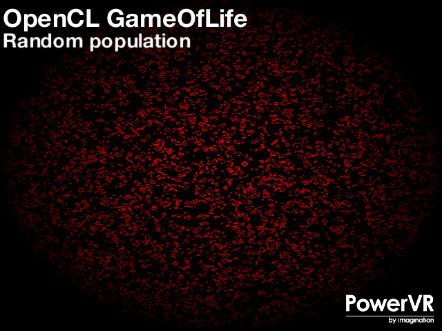

OpenCL 1.x Examples
OpenCL is a cross-platform API for parallel computing on modern processors, including CPUs, GPUs and custom accelerators. It is available both on desktop and embedded platforms, with an embedded profile which is used for more efficient rendering on mobile devices. Rather than being bottlenecked by the CPU, an application can use OpenCL to make use of processors like the GPU that may otherwise remain starved of work, accelerating the application. Also, many workloads that are typically run serially on a CPU are able to complete significantly faster by parallelizing the algorithm and executing them on a GPU. This API is available on PowerVR Series6 GPUs and later.
Beginner | Intermediate | Advanced
Beginner
-

How to invoke an OpenCL kernel
Description:
A basic tutorial that shows step-by-step how to initialize OpenCL, create a kernel and then execute it. A kernel is a C-like language used for writing programs.
Controls:
Links:
Intermediate
-

Introduction to image processing using OpenCL API.
Description:
This demonstration deals with image processing. It illustrates the usage of OpenCL to write linear and non-linear filter kernels.
Controls:
Links:
-

This example demonstrates the most optimal path to stream textures from the Camera of a mobile device and then Share it across API's
Description:
Streaming texture data from a camera source to a graphics API is a technique which can be very costly if hardware and software optimisations are not used correctly. This example demonstrates the correct usage for platform-specific texture streaming using native APIs relevant for each platform.
Controls:
Esc : Close the application
Links:
Advanced
-

Implementation of John Conway's Game of Life using OpenCL.
Description:
This demo utilises OpenCL to take advantage of the GPU computation available in PowerVR Series6 to implement John Conway's Game of Life simulation, updating every aspect of the grid where all the particles are stored. OpenGL then retrieves the result of that computation and presents it on the screen.
Controls:
Left and right arrows : Switch between evolution functions.
Up : Pause simulation.
Down : Generate new population.
Links:
-

Shows how to implement a simple particle system using OpenCL and the GPU.
Description:
The demo utilises OpenCL to implement a particle system. Particle systems are techniques that use a large amount of sprites to simulate phenomena that would be difficult to reproduce with conventional rendering techniques. Furthermore, it also highlights the interaction between OpenCL and OpenGL (plus OpenGL ES 2).
- left and right arrows - Decrease and increase number of particles
- up and down arrows - Switch between OpenCL and CPU Particle System implementation.
Controls:
Links:
-

Shows how to generate procedural textures using OpenCL.
Description:
Utilises OpenCL to generate procedural textures using Steven Worley's cellular texture basis functions. Procedural textures are computer-generated images created using an algorithm intended to create a realistic representation of natural elements such as wood or marble.
- left and right arrows - Switch between distance metrics
- up and down arrows - Switch between linear combination of weights
Controls:
Links: